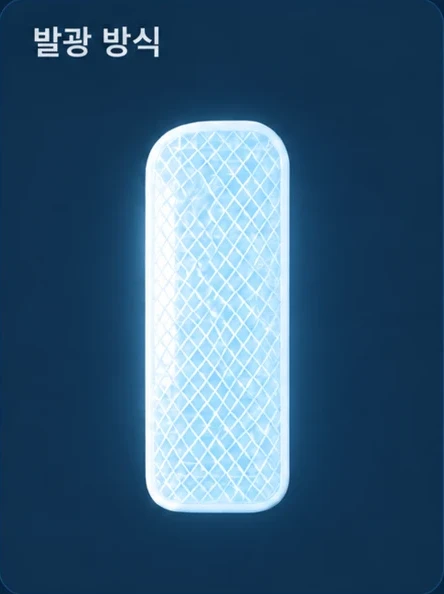

얇고 유연한 발광 구조
얇고 유연한 디스플레이 구조로 제작되어 웨어러블 제품에 쉽게 적용할 수 있습니다. 부드럽고 유연한 특성을 바탕으로 곡면과 움직임이 있는 다양한 제품에 적용할 수 있습니다.
FLD는 얇고 유연한 면광원으로, 설계된 디자인에 따라 그래픽 전체가 고르게 발광합니다. 웨어러블 제품부터 시설물과 안전표지까지 다양한 분야에 적용할 수 있습니다. GLOWUS는 단순히 빛을 만드는 것을 넘어, 야간 환경에서 정보를 더 명확하게 인식할 수 있는 새로운 안전 솔루션을 제안합니다.
필요한 곳에 더 선명한 빛을 더해, 실질적인 안전을 만듭니다.
얇고 유연한 디스플레이 구조로 제작되어 웨어러블 제품에 쉽게 적용할 수 있습니다. 부드럽고 유연한 특성을 바탕으로 곡면과 움직임이 있는 다양한 제품에 적용할 수 있습니다.
LED와 같은 점광원 방식이 아닌, 발광면 전체가 고르게 빛나는 면발광 방식입니다. 문자와 그래픽을 직관적으로 표현할 수 있어 야간에도 위치와 정보를 명확하게 전달합니다.
로고, 문구, 패턴 등 다양한 형태로 제작할 수 있습니다. 적용 제품과 사용 환경에 맞춰 크기, 발광 형태, 전원 방식 및 제어 조건을 협의하여 개발합니다.

얇고 유연한 소재 위에 빛과 정보를 구현합니다.
작업복·안전모·가방 같은 웨어러블 제품에 적합합니다.

전기를 가하면 발광층 자체가 고르게 빛납니다.
안전표지·시설물·광고·인테리어에 적용합니다.


BEFORE · 반사AFTER · 발광빛과 환경에 따라 시인성이 달라지는 수동형 구조
빛과 정보를 함께 전달하는 능동형 안전 솔루션

위험한 환경에서 작업자의 위치를 더 선명하고 명확하게 전달할 수 있습니다.

움직임이 많은 제품에도 적용할 수 있어 야간 활동자의 시인성을 높이는 데 활용됩니다.

빛과 그래픽을 결합하여 정보 전달 기능을 갖춘 발광 구조를 구현합니다.
2022년 설립 이후 한국도로공사·코레일·현대모비스·현대자동차와 함께 도로·철도·모빌리티 현장의 야간 안전 제품을 개발하고 시범 적용해 왔습니다.
전체 연혁 보기 →세계여성발명대회 금상 · 은상 수상
주식회사 글로우어스 설립
한국도로공사 제설차 디스플레이 시범사업 수행
현대모비스 웨어러블 안전제품 프로젝트 수행
한국도로공사 고속도로 표지판 시범 설치
코레일 야간 작업자용 안전모 스트랩 시범 테스트
현대자동차 웨어러블 안전제품 개발 참여
GLOWUS는 완제품 공급은 물론, 파트너사의 제품과 사용 환경에 FLD · EL Display 기술을 적용하는 공동개발과 맞춤형 제작으로 협업합니다.